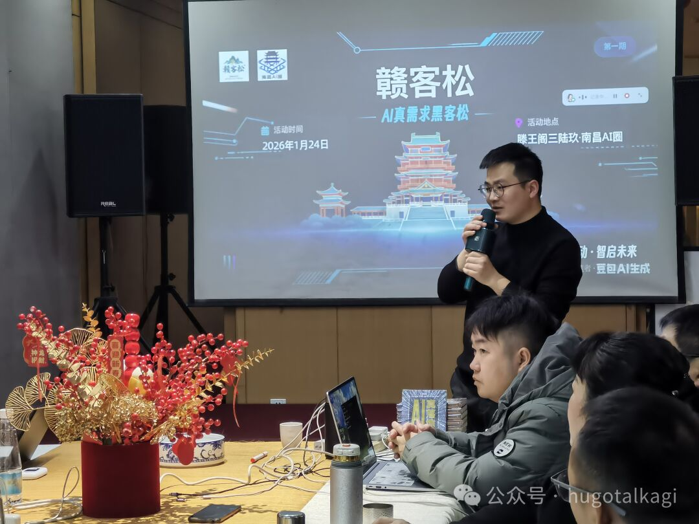
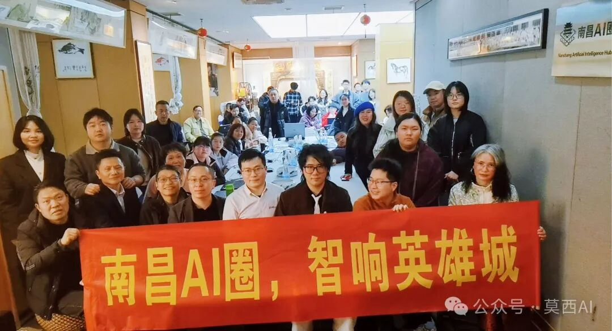

AI 实践者 · 江西 AI 圈发起人
把 AI 带进
真实世界。
你好，我是莫西。
写过代码，带过团队，现在和一群有想法的人，
一起让 AI 在具体的工作与生活里发生。
立足南昌，连接更远的地方NANCHANG, CHINA
在现场，也在行动2026.01

技术是起点，做成事情才有意义。
AI 应用知识分享社区共建
01 / 关于我ABOUT
从写代码，
到连接人与可能。
过去近十年，我做过研发、架构和技术管理。那些经历让我习惯把问题拆开：谁来使用、解决什么、怎样判断有没有用。
后来，我把这份习惯带进 AI 实践。比起又一个新工具，我更关心它能否帮一个人完成手头的事。
2025 年夏末，我在南昌发起 AI 圈。从一次次线下见面开始，和江西的伙伴们一起学习、分享，也寻找把想法做出来的机会。
莫西保持好奇，持续动手。
我的出发点
「把技术讲清楚，
首先要理解眼前的人。」
02 / 正在做的事PRACTICE
在真实问题里，
找 AI 的用武之地。
学习、动手、连接。
这三件事，构成了我的日常。
01让 AI 用起来
从业务里的重复任务开始，把零散素材整理成内容，把经验整理成知识，把一个想法变成可试用的流程。先做出一小步，再用真实反馈继续往前走。
了解落地探索02把方法讲明白
我做过企业 AI 培训，也向社区伙伴和孩子讲过 AI。面对不同的人，从他们正在做的事讲起：把一个岗位任务拆成可以上手的练习，再把尝试中的问题和方法记录下来。把技术讲明白，也让听到的人有机会亲手做一遍。
读我的实战笔记03让同路人相遇
组织线下交流、赣客松和一人公司见面会，让技术、行业经验和真实需求在同一张桌子上碰面。也走出去，看看其他城市正在发生什么，再把经验带回江西。
走进江西 AI 圈一个想法，怎样走到实际使用？
- 01
先把问题说清楚
谁在做这件事？哪一步最费时？先理解流程和手头的资料。
- 02
做出能试用的一小步
选一个具体场景，让真实使用者试一遍，看看哪里有用、哪里还不顺。
- 03
把经验留下来
记录有效的方法和遇到的问题，让下一次实践有据可循。

2,000+
位圈友 截至 2026 年 9 月
6
个城市节点 截至 2026 年 9 月
南昌 · 九江 · 赣州
宜春 · 抚州 · 景德镇
03 / 实战笔记FIELD NOTES
做过，才有话说。
在「莫西 AI」，记录实践，
也记录尚在寻找答案的问题。
04 / 保持连接LET’S TALK
下一件有意思的事，
一起做。
你正在尝试什么？遇到了什么具体问题？
带着一个想法、一份作品，或者一份好奇心来聊聊。
- 企业与业务伙伴带上一个正在发生的问题，聊聊 AI 能在哪一步帮忙。
- 技术、设计与内容创作者带上你的作品和实践，寻找一起动手的机会。
- 高校、园区与本地组织从一次交流、一场实操或一个项目开始认识彼此。